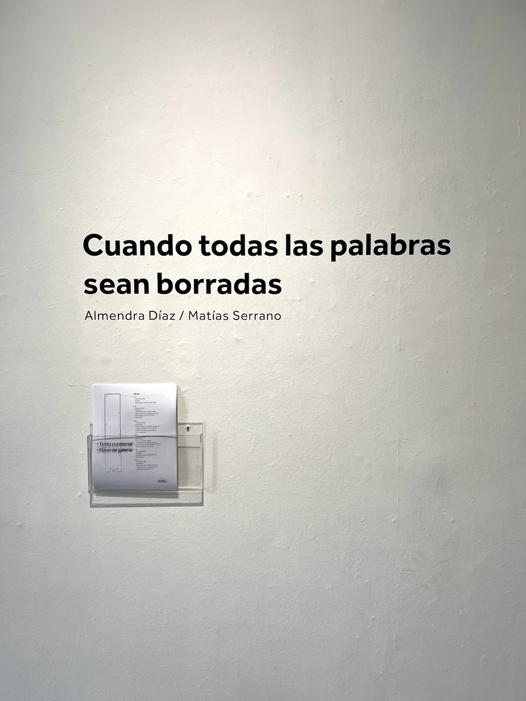
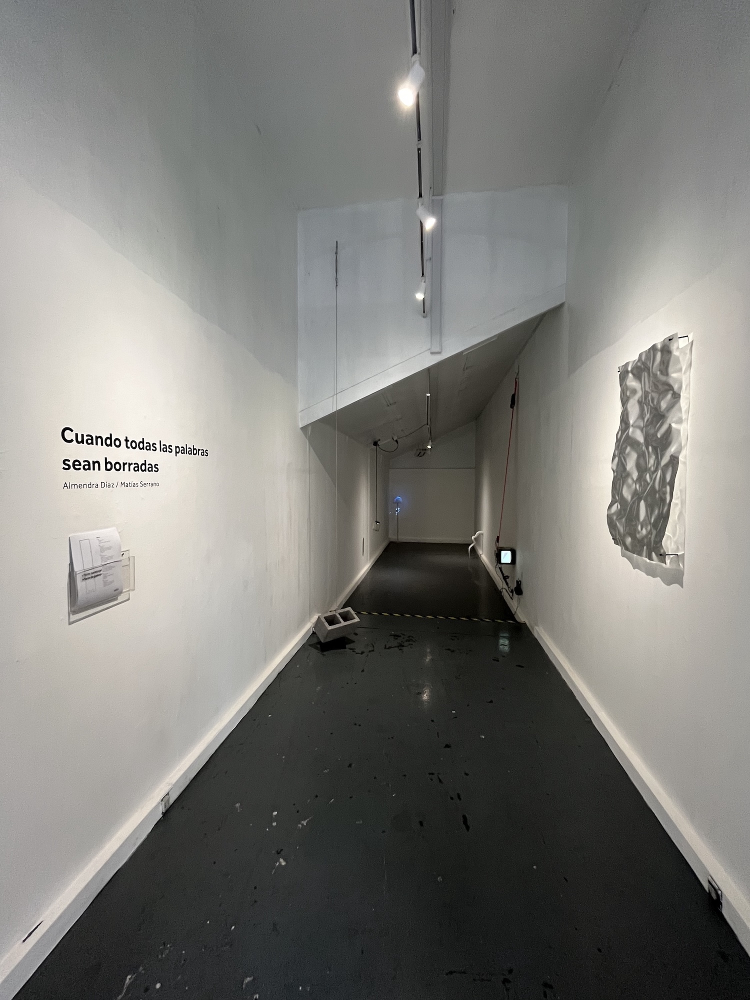
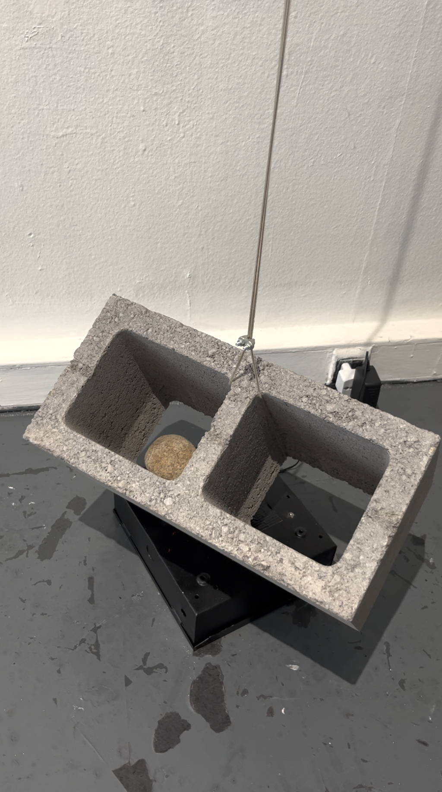
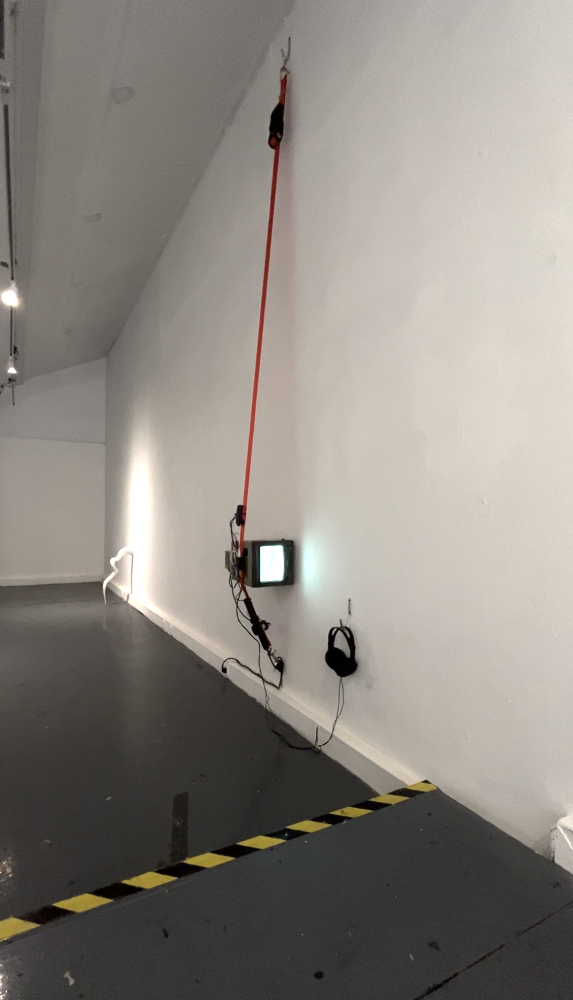
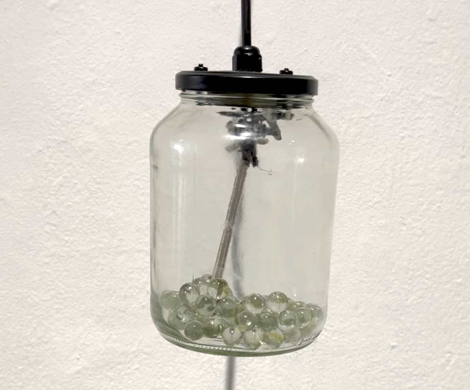
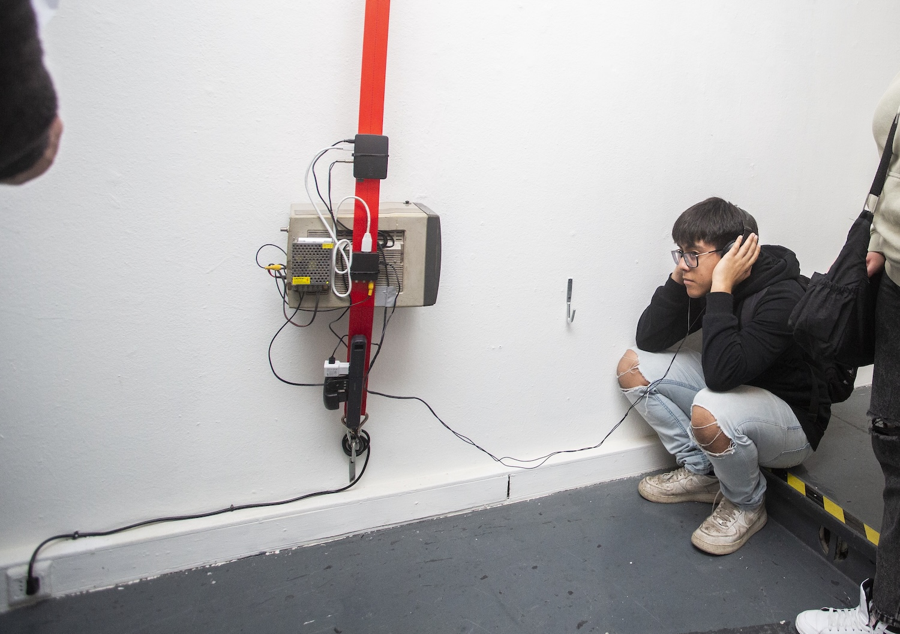
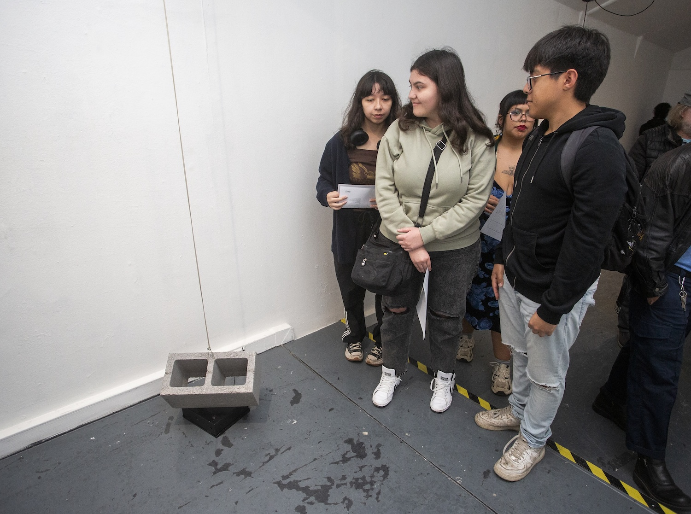
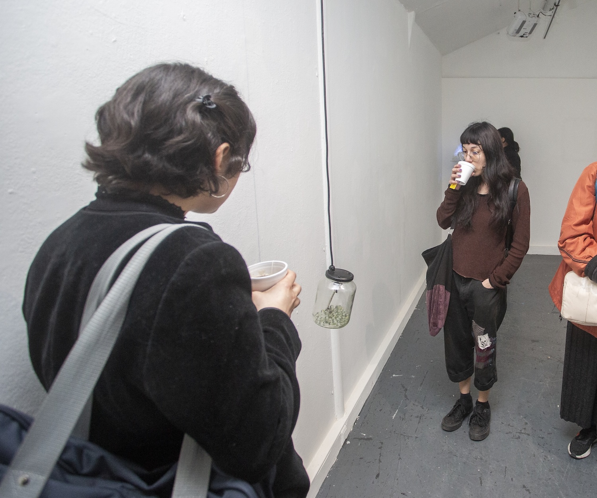
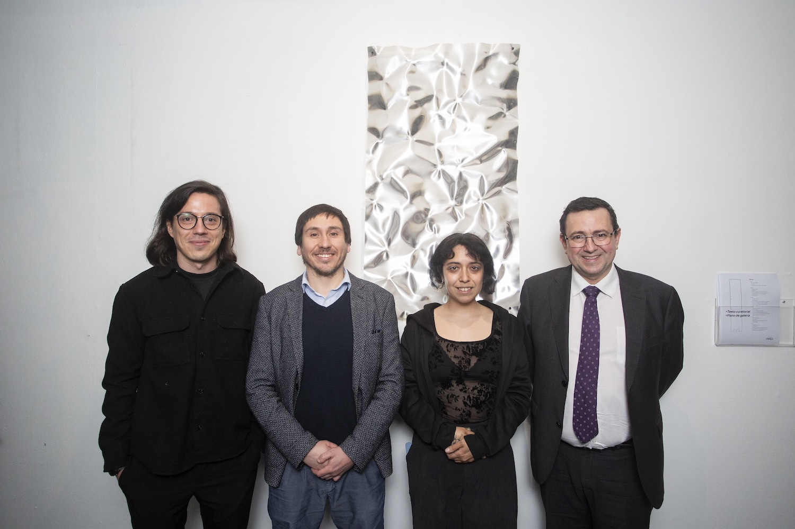

Duo exhibition together with Almendra Díaz at Galería de Artes Visuales UNIACC (Santiago, Chile. 2025)
The participation consisted of three pieces:
oí 1. Installation. Concrete brick, steel cable, unipolar stepper motor, river stone, ATmega328P microcontroller
oí 2. Installation. Sony PVM-8020 monitor, tie-down strap, Raspberry Pi 4, stereo audio and generative image in p5.js, headphones
oí 3. Assembly. Glass jar, transparent marbles, third-hand tool part, microwave motor, electrical cord, steel hook

Thanks to Angel Olivares for his support during installation

We are surrounded by objects; that is, by matter. Matter is not something given, but the result of contingent encounters: confluences of energies and prior matters, whose trajectory we could trace back to the origin of the universe. This indifferent origin has given rise to all kinds of entities: the sun, the ground, this building, each person, each speck of dust. Each object is therefore a confederation of materials and forces arising in the course of a cosmological history. In that sense, every object, however concrete it may seem, is more of an event: a momentary point within a chain of occurrences — perhaps causal, perhaps coincidental — that allow its existence, naming, desire, exchange or disposal.
However, objects present themselves to us in an incomplete, elusive way. Following Object-Oriented Ontology, it would be impossible to define an object without naming its sensory qualities or the materials that compose it. The attempt would reveal the ineffable nature of its being: how words fail when trying to capture what it truly is. As a cosmic analogy: we cannot look directly at the sun, but we do see its rays reflected and the infinite ways in which its light is absorbed, transformed or veiled by things. From there, we could draw forth poetic metaphors: reverberations of light, sonic flashes, saturations of aromas.
This exhibition by academics Almendra Díaz and Matías Serrano (Escuela de Artes Visuales UNIACC) presents a series of insignificant objects. The adjective does not imply a lack of value, but a willingness to situate oneself outside the regime of meaning: objects that do not become signs, that do not aspire to construct sense. It is a material proposal that explores the contingency of materials as specific states of matter affected by external forces. They are, perhaps, the current substrate for future metaphors. Objects without function, without communicative intention, without correlation to a subject: fragments of matter that only account for the energy flows that have passed through them, and that do not seek to be read, but simply to be.



Opening

Photo: Sergio Toledo

Photo: Sergio Toledo

Photo: Sergio Toledo

Photo: Sergio Toledo